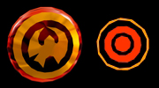
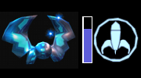

Willkommen bei WoP!

Das Menü
Hauptmenü
Von hier aus gelangt ihr in alle wichtigen Bereiche. Und das tolle ist: Es funktioniert alles!Multi
 Hier habt ihr die Möglichkeit, einen Server zu starten: vor allem für die Offlinespieler und LAN-Spieler
sehr wichtig.
Das tolle an unserem Menü ist, dass ihr nicht nur eine Map auswählen könnt, sondern auch eine Mapliste
erstellen könnt.
Dazu klickt ihr einfach alle Maps an, die ihr spielen wollt. Die Reihenfolge wird euch angezeigt, und solltet
ihr euch mal verklickt haben,
ist es über erneutes Anklicken möglich, eine Map wieder von der Liste zu streichen. Als kleinen Vorgeschmack
gibt es beim Anwählen der
Map einen Screenshot der echten Map zu sehen. Im unteren Teil lässt sich noch bequem der Spielmodus auswählen.
Dies sollte man machen, bevor (!) man die Mapreihenfolge festlegt.
Hier habt ihr die Möglichkeit, einen Server zu starten: vor allem für die Offlinespieler und LAN-Spieler
sehr wichtig.
Das tolle an unserem Menü ist, dass ihr nicht nur eine Map auswählen könnt, sondern auch eine Mapliste
erstellen könnt.
Dazu klickt ihr einfach alle Maps an, die ihr spielen wollt. Die Reihenfolge wird euch angezeigt, und solltet
ihr euch mal verklickt haben,
ist es über erneutes Anklicken möglich, eine Map wieder von der Liste zu streichen. Als kleinen Vorgeschmack
gibt es beim Anwählen der
Map einen Screenshot der echten Map zu sehen. Im unteren Teil lässt sich noch bequem der Spielmodus auswählen.
Dies sollte man machen, bevor (!) man die Mapreihenfolge festlegt.Select Bots
Habt ihr im "Multi"-Menü auf "Select Bots" geklickt landet ihr hier. Ihr könnt nun Bots für ein Spielchen auswählen und auch bequem mehrere auf einmal hinzufügen. Dazu einfach die gewünschten Bilder anklicken und die ausgewählten Bots werden rechts in der Liste angezeigt. Wollt ihr einen Bot wieder entfernen, so klickt ihr in der Liste auf den Namen und er verschwindet. Solltet ihr im Bildschirm "Multi" einen Teammodus ausgewählt haben, so erscheint neben dem Botnamen zudem noch das Team, welches man durch Anklicken ändern kann.Player
 Über Setup -> Player gelangt ihr zur Auswahl für Model, Skin, Name, Logo und Farbe des Logos.
Im oberen Teil des Bildschirms sind die Models aufgelistet, die zur Verfügung stehen. Sucht euch eines aus und
klickt es an.
Nun widmet ihr euer Augenmerk dem rechten Teil des Bildschirms. Hier findet ihr die auswählbaren Skins zum
selektierten Model.
Je nach Model stehen hier mehr oder weniger viele zur Auswahl.
Über Setup -> Player gelangt ihr zur Auswahl für Model, Skin, Name, Logo und Farbe des Logos.
Im oberen Teil des Bildschirms sind die Models aufgelistet, die zur Verfügung stehen. Sucht euch eines aus und
klickt es an.
Nun widmet ihr euer Augenmerk dem rechten Teil des Bildschirms. Hier findet ihr die auswählbaren Skins zum
selektierten Model.
Je nach Model stehen hier mehr oder weniger viele zur Auswahl.Um sich ein Model genauer anzusehen, klickt ihr einfach das 3D-Model an und haltet die Maustaste gedrückt. Durch Bewegen der Maus könnt ihr das Model nun rotieren lassen. Zudem könnt ihr durch Betätigen der Waffenwechsel-Taste auch schon mal sehen, wie die Models mit den verschiedenen Waffen aussehen.
Im linken Teil des Bildes ist Platz für euren Namen (nicht viel Platz, aber es sollte reichen). Über die kleinen Pfeile weiter unten sucht ihr euch euer Spraylogo aus, die Farbauswahl darunter legt die Farbe für das Logo fest.
Game Options
 Hierher gelangt ihr über Setup -> Options. Neben einigen Grafikdetails, die ihr hier einstellen könnt,
sind vor allem das Crosshair und das HUD von Interesse. Das Crosshair könnt ihr auswählen, indem ihr die
Auswahl
anklickt und solange klickt, bis euer gewünschtes Crosshair erscheint. Die HUD-Auswahl ist dafür in einer
Liste realisiert.
Klickt einmal auf HUD und ihr gelangt zu einer Liste, in der alle verfügbaren HUDs aufgelistet sind. Wählt nun
bequem euer
gewünschtes HUD aus. Diese Änderungen finden sofort statt. Wenn ihr also während eines Spieles diese Optionen
ändert,
seht ihr beim Weiterspielen sofort die neu ausgewählten Grafiken. Alle weiteren Punkte in diesem Menü sollten
sich von selbst erklären.
Hierher gelangt ihr über Setup -> Options. Neben einigen Grafikdetails, die ihr hier einstellen könnt,
sind vor allem das Crosshair und das HUD von Interesse. Das Crosshair könnt ihr auswählen, indem ihr die
Auswahl
anklickt und solange klickt, bis euer gewünschtes Crosshair erscheint. Die HUD-Auswahl ist dafür in einer
Liste realisiert.
Klickt einmal auf HUD und ihr gelangt zu einer Liste, in der alle verfügbaren HUDs aufgelistet sind. Wählt nun
bequem euer
gewünschtes HUD aus. Diese Änderungen finden sofort statt. Wenn ihr also während eines Spieles diese Optionen
ändert,
seht ihr beim Weiterspielen sofort die neu ausgewählten Grafiken. Alle weiteren Punkte in diesem Menü sollten
sich von selbst erklären.Das Ingame-Musik-Menü
Unser Prachtstück in Sachen Musik ist die Ingame-Jukebox, welche mit Liedern gefüllt ist, die teilweise extra für unser Spiel komponiert wurden. Das Menü erreicht ihr auf zwei Arten: entweder ihr habt euch im "Controls"-Menü unter "Misc" eine Taste für das Menü definiert, oder ihr drückt einfach mal die "ESC-Taste" und wählt nun "Music Menu" aus. Auf dem nun erscheinenden LP-Cover sind alle verfügbaren Titel aufgedruckt und ihr könnt die Titel einfach anklicken um sie abzuspielen. Auch eine Tracklist ist möglich, dazu einfach die gewünschten Titel in der gewünschten Reihenfolge anklicken.Da es mehr als eine Platte gibt, gibt es außerdem noch die Möglichkeit, über den "switch"-Button die LP zu wechseln. Natürlich kann die selbst erstellte Playlist Stücke von verschiedenen Platten enthalten.
Das Ingame-Vote-Menü
 Ihr spielt auf einem Server, aber wollt mal einen Mapwechsel oder euch gefällt der Gametype nicht?
Fragt doch einfach die Mitspieler, ob sie auch wechseln möchten. Dazu kann in WoP ein Vote gestartet werden
und das bequem aus dem
Ingame-Menü heraus. Einfach auf "Call Vote" klicken und dann im oberen Bereich auswählen, wofür gevotet werden
soll (map, gametype,..).
Im unteren Teil kommt dann eine Liste mit den zu wählenden Maps/Gametypes/.. zum Vorschein.
Nach einem Vote muss man nur noch warten, ob die Mitspieler dem Wechsel zustimmen oder
nicht.
Ihr spielt auf einem Server, aber wollt mal einen Mapwechsel oder euch gefällt der Gametype nicht?
Fragt doch einfach die Mitspieler, ob sie auch wechseln möchten. Dazu kann in WoP ein Vote gestartet werden
und das bequem aus dem
Ingame-Menü heraus. Einfach auf "Call Vote" klicken und dann im oberen Bereich auswählen, wofür gevotet werden
soll (map, gametype,..).
Im unteren Teil kommt dann eine Liste mit den zu wählenden Maps/Gametypes/.. zum Vorschein.
Nach einem Vote muss man nur noch warten, ob die Mitspieler dem Wechsel zustimmen oder
nicht.Die Game Modes
Spray your Color (SyC)
Es läuft folgendermaßen ab: Ihr müsst euren Gegner fraggen, um diesem dann eine Farbpatrone abzunehmen. Davon könnt Ihr bis zu acht Stück einsammeln. Habt Ihr eine oder mehrere Farbpatronen, so dürft Ihr einen speziellen Teleporter (siehe links) benutzen, welcher ohne Farbpatronen nicht funktioniert. Mit Hilfe dieses Teleporters gelangt Ihr in den sogenannten Sprayroom, in dem es zwei Tafeln gibt, an welche man dann seine Logos sprühen darf. Sobald Ihr in den Sprayroom teleportiert werdet, wechselt Ihr automatisch in den Spraymod, Ihr habt also nur noch eine Sprühpistole in der Hand und könnt keine Waffen mehr benutzen. Somit ist der Sprayroom auch eine neutrale Zone. ;)Habt Ihr eure Logos, für welche es dann Punkte gibt, an die entsprechende Wand gesprüht, geht es auch gleich wieder zurück in den Hauptraum, wo Ihr dann weitere Farbpatronen erkämpfen dürft.
Seht ihr eine Farbpatrone, die zu eurem Team gehört, so könnt ihr diese neutralisieren, damit der Gegner sie nicht aufsammeln kann. Im FFA-Modus kann man die eigenen Patronen nicht aufsammeln und auch nicht unschädlich machen. Hier heißt es: Pech gehabt. Dafür braucht man sich beim Sprühen keine Gedanken zu machen, welche Tafel denn nun die richtige ist, denn im FFA-Modus stehen beide Tafeln zur Verfügung.
Punktevergabe
Für jedes gesprühte Logo bekommt das eigene Team 5 Punkte. Im FFA-Modus wandern die Punkte logischerweise auf das eigene Konto. Sollte man es schaffen, 5 Logos nacheinander zu sprühen ohne den Raum zu verlassen, bekommt man einen 10-Punkte-Bonus. Schafft man es sogar, 8 Logos zu sprühen, so bekommt man abermals 25 Extrapunkte.Beispiele
3 Logos: 3 * 5 Punkte = 15 Punkte6 Logos: 6 * 5 Punkte = 30 Punkte + 10 Punkte Bonus = 40 Punkte
8 Logos: 8 * 5 Punkte = 40 Punkte + 10 Punkte Bonus + 25 Punkte Bonus = 75 Punkte
Big Balloon (BB)
BigBalloon ist im Grunde nichts anderes als das alte "Domination" bei UT, nur dass es bei uns Kisten sind, die jeweils einen Ballon beinhalten, der aufsteigt, sobald man in der Nähe der Kiste stehenbleibt. Es werden dabei drei Kisten in einer Map verteilt. Sobald man sich einer dieser Kisten nähert, steigt ein Ballon in der entsprechenden Teamfarbe auf. Das Aufsteigen des Ballons dauert dabei allerdings ein paar Sekunden und es gibt erst Punkte, sobald der Ballon ganz oben ist. Möchte man einen Balloon schneller aufsteigen lassen, so müssen sich einfach mehrere Spieler des gleichen Teams um den Balloon versammeln. Je länger der Ballon oben bleibt, bzw. je mehr Ballons in der eigenen Teamfarbe erstrahlen, desto mehr Punkte gibt es. Berührt ein Gegenspieler die Kiste mit dem Ballon für drei Sekunden, so platzt der Ballon und es steigt ein neuer auf, diesmal dann aber eben in der gegnerischen Teamfarbe.Damit man nicht stundenlang umherlaufen muss ,um die Ballons zu finden, wurde neben dem speziellen HUD noch ein Wallhack installiert. Dieser zeigt die Position der Kisten an und gibt auch Auskunft darüber, welches Team gerade einen Ballon eingefärbt hat.
Punktevergabe
Für jeden Balloon in Teamfarbe bekommt man alle 2 Sekunden einen Punkt.Sind alle drei Balloons in der Hand eines Teams, werden die Punkte doppelt gezählt. Dann bekommt man also alle 2 Sekunden pro Balloon 2 Punkte (= 6 Punkte in 2 Sekunden).
Capture the Lolly (CtL)
Der zurecht sehr beliebte Spielmodus "Capture the Flag" hat auch in der World of Padman seinen Auftritt. Statt nach Flaggen ist der Pad hier allerdings auf der Jagd nach zuckersüßen Lutschern. Gespielt wird dabei in zwei Teams, welche versuchen müssen, in die gegnerische Basis einzudringen und den Lolly zu entwenden. Ist dies geschehen, muss der Lolly wieder in die eigene Basis geschafft werden, um dort beim eigenen Lutscher abgegeben zu werden. Wichtig ist dabei, dass es nur einen Punkt gibt, wenn der eigene Lolly in der Basis ist. Sollte dies nicht der Fall sein, muss zuerst der eigene Lolly zurückgeholt werden, indem der Lutscher-Träger gefraggt wird und das eigene Team über den Lolly läuft. Dieser wird sodann in der eigenen Basis neu erscheinen und muss nicht erst zurück getragen werden. Es geht also darum, sowohl den fremden Lolly zu stehlen, als auch den eigenen zu beschützen, um punkten zu können. Erfolgreich wird nur das Team sein, das gut miteinander arbeitet.Last Pad Standing (LPS)
LPS ist nichts anderes als das gute, alte LastManStanding. Jeder Spieler hat eine bestimmte Anzahl an virtuellen Leben und scheidet aus, sobald diese Leben alle verbraucht sind. Der letzte übrig gebliebene Spieler gewinnt anschließend das Match.Da dieser Spieltyp dazu einlädt, sich zu verstecken und zu warten, bis sich die anderen Spieler gegenseitig das Leben schwer gemacht haben, wurde bei "LPS" ein kleiner Wallhack mit eingebaut. Über den Köpfen der Spieler ist ein Symbol, das ihr auch durch Wände hindurch seht. Sich zu verstecken ist dadurch also nur sehr schwer möglich. Damit es besonders spannend wird, wird der führende Spieler mit einem roten Symbol angezeigt und steht somit auf Platz eins der Abschussliste. Sollten mehrere Spieler gleichzeitig auf Platz eins stehen, so werden natürlich auch alle mit einem roten Symbol gekennzeichnet.
InstaPad
"InstaPad" ist kein eigenständiger Spielmodus, vielmehr kann er bei jedem der im Spiel enthaltenen Varianten über das Menü hinzugeschaltet werden. Entscheidet ihr euch für "InstaPad", so werden alle Waffen und Munitionspakete aus den Maps entfernt und die Spieler werden von Beginn einer Runde an mit der INJECTOR und unendlich viel Munition ausgestattet. Die INJECTOR funktioniert dabei ähnlich wie die SPLASHER, hat folglich eine langsame Feuerrate, dafür aber eine unglaubliche Durchschlagskraft - ein Treffer führt meist zum direkten Sieg über den Gegner. Zusätzlich wurde die Waffe noch mit einem speziellen Zoom ausgestattet, welcher gegnerische Pads leuchtend darstellt. InstaPad ist somit genau der richtige Zusatz für Freunde des genauen Zielens und schnellen Gameplays.Die Waffen
PUNCHY
Diese Handpuppe hat es in sich: Sie beißt und fügt damit hohen Schaden zu. Nicht nur bei Munitionsknappheit ist Punchy die richtige Wahl, denn wer diese Waffe ausgewählt hat, läuft auch ein wenig schneller und kann somit besser flüchten - oder angreifen. Schafft ihr 5 Kills mit Punchy in einer Runde, werdet ihr außerdem zum PuppetMaster und könnt euren Gegnern das Leben für 30 Sekunden noch schwerer machen.NiPPER
Der Knirps, oder auch NiPPER, ist die Startwaffe und funktioniert im Grunde genauso wie eine Pistole. Bei dieser Waffe gibt es zwar ein Dauerfeuer, doch schießt sie schneller, wenn man wie verrückt auf seiner Maustaste herumklickt.PUMPER
 PUMPER ist eine doppelläufige Spritzpistole, welche es schonmal richtig krachen lassen kann.
Mit ihren Blitzen am Ende des Strahles kann sie auch noch Feinde in der näheren Umgebung Schaden zufügen.
Man muss allerdings beachten, dass sie eine begrenzte Reichweite hat.
PUMPER ist eine doppelläufige Spritzpistole, welche es schonmal richtig krachen lassen kann.
Mit ihren Blitzen am Ende des Strahles kann sie auch noch Feinde in der näheren Umgebung Schaden zufügen.
Man muss allerdings beachten, dass sie eine begrenzte Reichweite hat.BUBBLE G.
 Jetzt wird's richtig bunt. Die BUBBLE G. (Bubble Gum) verschießt in schneller Abfolge verschieden farbige
Patronen, die einem ganz schön zu schaffen machen können.
Jetzt wird's richtig bunt. Die BUBBLE G. (Bubble Gum) verschießt in schneller Abfolge verschieden farbige
Patronen, die einem ganz schön zu schaffen machen können.BALLOONY
 Diese Waffe ist unberechenbar. Mit ihren Wasserbomben, die wie wild umher springen, ist es recht schwer, einen
gezielten Schuss mit der BALLOONY hinzulegen.
Der Vorteil ist allerdings, dass die Bomben ordentlichen Schaden machen und man so recht schnell seinen Gegner
erledigen kann.
Diese Waffe ist unberechenbar. Mit ihren Wasserbomben, die wie wild umher springen, ist es recht schwer, einen
gezielten Schuss mit der BALLOONY hinzulegen.
Der Vorteil ist allerdings, dass die Bomben ordentlichen Schaden machen und man so recht schnell seinen Gegner
erledigen kann.SPLASHER
 Jedes Spiel braucht eine Sniper-Waffe. In der "World of Padman" ist hierfür die SPLASHER vorhanden.
Mit ihrem variablen Zoom ist sie perfekt für mittlere bis hohe Entfernungen geeignet. Nachteil: Sie hat eine
sehr geringe Schussfrequenz.
Jedes Spiel braucht eine Sniper-Waffe. In der "World of Padman" ist hierfür die SPLASHER vorhanden.
Mit ihrem variablen Zoom ist sie perfekt für mittlere bis hohe Entfernungen geeignet. Nachteil: Sie hat eine
sehr geringe Schussfrequenz.BOASTER
 Eine wirklich abgefahrene Waffe. Mit ihrem Strahl, der sich wie ein Wasserstahl krümmt, macht sie ordentlich
Schaden.
Zudem wird alles, was die BOASTER trifft, verdammt glitschig, sodass man den Gegner fast manövrierunfähig
machen kann und er so zu leichter Beute wird.
Eine wirklich abgefahrene Waffe. Mit ihrem Strahl, der sich wie ein Wasserstahl krümmt, macht sie ordentlich
Schaden.
Zudem wird alles, was die BOASTER trifft, verdammt glitschig, sodass man den Gegner fast manövrierunfähig
machen kann und er so zu leichter Beute wird.BOOM-BOOM BETTY
 BETTY sorgt mir ihren fetten Feuerbällen für Platz in der Manege. Wichtig ist hier, dass die Feuerbälle nicht
sehr schnell fliegen und
darum eher auf mittlerer Distanz anzuraten ist.
BETTY sorgt mir ihren fetten Feuerbällen für Platz in der Manege. Wichtig ist hier, dass die Feuerbälle nicht
sehr schnell fliegen und
darum eher auf mittlerer Distanz anzuraten ist.iMPERiUS
 Wenn man einen lila Stern sieht, sollte man schnell weglaufen. Mit ihrer alles vernichtenden Explosion ist die
iMPERiUS einfach mächtiger
als alle anderen Waffen. Sie hat allerdings auch zwei Nachteile. Mit maximal lediglich zwei Schuss ist sie
nicht grade üppig bestückt, und
man braucht einige Zeit um die Waffe zu laden. Ist sie geladen ertönt ein Piepton und man sollte den Abzug
loslassen,
damit man sich nicht selbst pulverisiert. Zudem wackelt das Biest auch noch hin und her, wenn man lädt, sodass
das Zielen erschwert wird.
Wenn man einen lila Stern sieht, sollte man schnell weglaufen. Mit ihrer alles vernichtenden Explosion ist die
iMPERiUS einfach mächtiger
als alle anderen Waffen. Sie hat allerdings auch zwei Nachteile. Mit maximal lediglich zwei Schuss ist sie
nicht grade üppig bestückt, und
man braucht einige Zeit um die Waffe zu laden. Ist sie geladen ertönt ein Piepton und man sollte den Abzug
loslassen,
damit man sich nicht selbst pulverisiert. Zudem wackelt das Biest auch noch hin und her, wenn man lädt, sodass
das Zielen erschwert wird.iNJECTOR
Eine sehr spezielle Waffe, so speziell, dass man sie nicht in den Maps herumliegen sehen wird. Die iNJECTOR ist unsere Spezielwaffe für den Spielmodus "InstaPad" und funktioniert ähnlich wie die SPLASHER, hat also eine geringe Schussfrequenz, ist dafür aber besonders durchschlagskräftig. Zudem wurde sie mit einem Zoom ausgestattet, in dessen Sichtfeld die Gegner leuchtend dargestellt werden.Das HUD
Wechselbare HUDs
Wir haben insgesamt 10 HUD-Designs für euch kreiert, welche bequem über das Menü ausgewählt werden können. Zu finden ist die Auswahl unter "Setup -> Options". Da etwas weiter oben bereits erwähnt wurde, wie die Auswahl funktioniert, gibt es hier nun ein nettes C&P:Die HUD-Auswahl ist in einer Liste realisiert. Klickt einmal auf HUD und ihr gelangt zu einer Liste, in der alle verfügbaren HUDs aufgelistet sind. Wählt nun bequem euer gewünschtes HUD aus. Diese Änderungen finden sofort statt. Wenn ihr also während eines Spieles diese Optionen ändert, seht ihr beim Weiterspielen sofort die neu ausgewählten Grafiken.
Links
 Im linken Teil des HUDs wird euch angezeigt, welche Waffe ihr ausgewählt hat und wieviel Munition ihr für
diese Waffe noch habt.
Zudem ist hier auch die Punkteanzeige für die Teams untergebracht, sodass ihr immer auf einen Blick seht,
welches Team
denn die Nase vorn hat.
Im linken Teil des HUDs wird euch angezeigt, welche Waffe ihr ausgewählt hat und wieviel Munition ihr für
diese Waffe noch habt.
Zudem ist hier auch die Punkteanzeige für die Teams untergebracht, sodass ihr immer auf einen Blick seht,
welches Team
denn die Nase vorn hat.Der gelbe Punkt mit dem X darin zeigt einem immer an, welche Anzeige die eigene ist.
Mitte
Der wohl wichtigste Teil das HUDs. Im mittleren Teil seht ihr euren Gesundheitsstatus und die Schildenergie. Der linke Teil, also der ROTE Bereich, symbolisiert hierbei die Healthbar.Ist er komplett ausgefüllt habt ihr 100% Gesundheit. Sollte einmal der Fall eintreten, dass ihr mehr als 100% Gesundheit habt (Revival oder Respawn) so seht ihr einen entsprechenden Teil das Balkens in dunkelrot.
Beim rechten Teil, also der blauen Shield-Hälfte, verhält es sich ebenso. Habt ihr mehr als 100% Shield, seht ihr einen entsprechenden dunkelblauen Teil.
Rechts
Dieser Teil ist je nach Gamemode verschieden. Im normalen FFA, Teamdeathmatch und "LastPadStanding" wird hier nichts angezeigt. Bei "Spray your Color", "BigBalloon" und "Capture the Lolly" finden sich hier allerdings nützliche Informationen.
Spray your Color
Hier ist eine Anzeige über die Anzahl der eingesammelten Patronen integriert. Da das Limit an Patronen bei acht liegt, sind hier auch acht Punkte integriert. Jeder rote Punkt steht für eine Patrone.Big Balloon
Angezeigt wird, welche Balloons von welchem Team eingenommen sind. Mit etwas Übung hat man schnell begriffen, welcher Balloon wo in der Map zu finden ist. Zudem zeigt ein kleiner Balken an, wie lange man noch in der Nähe eine Balloons stehen muss, bis dieser aktiviert ist.Capture the Lolly
In diesem Spieltyp wird hier angezeigt, ob der eigene Lolly sicher in der eigenen Basis ist, vom Gegner aufgenommen wurde oder irgendwo im Level herumliegt.Health, Powerups und Holdables
Health & Shield
Loading Station
 In der "World of Padman" gibt es keine Gesundheitspunkte zum Aufsammeln. Anstatt über Items zu laufen, muss
man sich hier auf eine sogenannte
Loading Station stellen. Solange man auf der Loading Station steht, wird die Gesundheit regeneriert. Natürlich
geschieht dies auch nur, bis man 100% Lebensenergie hat,
dann bekommt man mitgeteilt, dass man voll aufgeladen ist. Die Stationen haben auch nicht unendlich viel
Energie. An der Größe der Kreuzes kann man
erkennen, wie viel Energie eine Station noch zu vergeben hat. Ist eine Station leer, dauert es eine Minute,
bis sie wieder zum Aufladen bereitsteht.
In der "World of Padman" gibt es keine Gesundheitspunkte zum Aufsammeln. Anstatt über Items zu laufen, muss
man sich hier auf eine sogenannte
Loading Station stellen. Solange man auf der Loading Station steht, wird die Gesundheit regeneriert. Natürlich
geschieht dies auch nur, bis man 100% Lebensenergie hat,
dann bekommt man mitgeteilt, dass man voll aufgeladen ist. Die Stationen haben auch nicht unendlich viel
Energie. An der Größe der Kreuzes kann man
erkennen, wie viel Energie eine Station noch zu vergeben hat. Ist eine Station leer, dauert es eine Minute,
bis sie wieder zum Aufladen bereitsteht.PadShield
 Dieses Item gibt euch auf einen Schlag 100% Shield!PadShard
 Beim Einsammeln von PadShards erhält man 5 Shieldpunkte. Das Schöne an den Shards ist, dass man sie auch
einsammeln kann,
wenn man bereits 100 Shieldpunkte hat. Man bekommt dennoch 5 Shieldpunkte
gutgeschrieben.
Beim Einsammeln von PadShards erhält man 5 Shieldpunkte. Das Schöne an den Shards ist, dass man sie auch
einsammeln kann,
wenn man bereits 100 Shieldpunkte hat. Man bekommt dennoch 5 Shieldpunkte
gutgeschrieben.Powerups
PADPOWER
 Eine Mischung aus Power und Schutz erwartet euch hier. Hat man es eingesammelt, sollte man sich schleunigst
auf Gegnerhatz machen,
denn neben dem verstärkten Schaden, den man verursacht, ist man zudem ein wenig vor Schäden der Gegner
geschützt. Als Extra ist man zudem vor Schäden der eigenen Waffen geschützt, sodass
Sprünge mit der Betty oder Imperius ohne Folgen bleiben.
Eine Mischung aus Power und Schutz erwartet euch hier. Hat man es eingesammelt, sollte man sich schleunigst
auf Gegnerhatz machen,
denn neben dem verstärkten Schaden, den man verursacht, ist man zudem ein wenig vor Schäden der Gegner
geschützt. Als Extra ist man zudem vor Schäden der eigenen Waffen geschützt, sodass
Sprünge mit der Betty oder Imperius ohne Folgen bleiben.REViVAL
 Unsterblich wird man hiermit nicht, doch regeneriert sich die Gesundheit automatisch und das bis hin zum
Doppelten der eigentlich möglichen Healthpunkte.
Unsterblich wird man hiermit nicht, doch regeneriert sich die Gesundheit automatisch und das bis hin zum
Doppelten der eigentlich möglichen Healthpunkte.JUMPER
 Häschen hüpf. Mit diesem PowerUp kann man dreimal so hoch springen wie normal. Damit erreicht man nicht nur
Stellen,
die sonst unbesucht bleiben müssten, man wird bei ständigem Umhergehüpfe auch ein schweres Ziel für seine
Gegner.
Häschen hüpf. Mit diesem PowerUp kann man dreimal so hoch springen wie normal. Damit erreicht man nicht nur
Stellen,
die sonst unbesucht bleiben müssten, man wird bei ständigem Umhergehüpfe auch ein schweres Ziel für seine
Gegner.ViSiONLESS
 Unsichtbar auf Gegnerjagd gehen ist schon eine tolle Sache und "Visionless" ermöglicht genau dies. Man wird
allerdings nicht zu 100% unsichtbar, ein leicht sichtbarer Schleier kann bei
genauem Hinsehen noch erspäht werden. Dennoch gelangt man hier mit meist sicher in den Teleporter und kann
unbemerkt einene Lolly stibizen.
Unsichtbar auf Gegnerjagd gehen ist schon eine tolle Sache und "Visionless" ermöglicht genau dies. Man wird
allerdings nicht zu 100% unsichtbar, ein leicht sichtbarer Schleier kann bei
genauem Hinsehen noch erspäht werden. Dennoch gelangt man hier mit meist sicher in den Teleporter und kann
unbemerkt einene Lolly stibizen.SPEEDY
Der helle Wahnsinn, wie schnell man sein kann. Mit diesem PowerUp rennt man um ein Vielfaches schneller und kann so nicht nur den Gegner einholen, sondern auch die Flucht wird zum Kinderspiel.PuppetMaster
 Wer es schafft, mit Punchy 5 Frags zu fabrizieren, wird in der World of Padman für 30 Sekunden zum
PuppetMaster.
In diesem Modus seid ihr schneller als eure Gegner, beinahe unverwundbar, und die Punchy macht noch einmal
mehr Schaden.
Damit seid ihr als PuppetMaster gefürchtet und könnt auf Gegnerjagd gehen. NICHT IN KOMBINATION MIT PADPOWER UND
SPEEDY BENUTZEN!
Wer es schafft, mit Punchy 5 Frags zu fabrizieren, wird in der World of Padman für 30 Sekunden zum
PuppetMaster.
In diesem Modus seid ihr schneller als eure Gegner, beinahe unverwundbar, und die Punchy macht noch einmal
mehr Schaden.
Damit seid ihr als PuppetMaster gefürchtet und könnt auf Gegnerjagd gehen. NICHT IN KOMBINATION MIT PADPOWER UND
SPEEDY BENUTZEN!
Holdables
FLOATER
 Hiermit hebt ihr ab. Das FLOATER gibt euch die Möglichkeit, zu von euch bestimmten Zeitpunkten zu fliegen. Habt ihr das Item eingesammelt erscheint am rechten Bildschirmrand eine Anzeige, wieviel "Treibstoff" ihr besitzt. Durch Druck auf die "USE"-Taste hebt man ab.KiLLERDUCKS
 Diese fiesen Biester könnt ihr auf eure Gegner losschicken. Sobald ihr sie
eingesammelt habt,
könnt ihr eine nach der anderen durch Drücken der "USE"-Taste losschicken. Die Entchen suchen sich automatisch
eine Person in der Nähe,
die sie angreifen und auch nicht mehr so einfach loslassen. Doch Vorsicht: Ist kein Gegner in der Nähe,
greifen die Quietscheentchen schonmal das Herrchen an!
Diese fiesen Biester könnt ihr auf eure Gegner losschicken. Sobald ihr sie
eingesammelt habt,
könnt ihr eine nach der anderen durch Drücken der "USE"-Taste losschicken. Die Entchen suchen sich automatisch
eine Person in der Nähe,
die sie angreifen und auch nicht mehr so einfach loslassen. Doch Vorsicht: Ist kein Gegner in der Nähe,
greifen die Quietscheentchen schonmal das Herrchen an!BOOMiES
 Klein aber oho, so kann man die Minen beschreiben. Sammelt man das Item ein, so bekommt man gleich drei
Haftminen zum Verteilen in der Map in die Hand. Ganze Minenfelder wird man damit
natürlich nicht fabrizieren können, aber als Defensivausrüstung sind diese Minen, die bei Annäherung
explodieren und ordentlich Schaden verursachen, eine echte Hilfestellung. Aber eben weil
sie so gefährlich sind, gibt es Stellen in den Maps, an denen sie nicht platziert werden können. Gelegt werden
diese kleinen Minen über den "Use-Button".
Klein aber oho, so kann man die Minen beschreiben. Sammelt man das Item ein, so bekommt man gleich drei
Haftminen zum Verteilen in der Map in die Hand. Ganze Minenfelder wird man damit
natürlich nicht fabrizieren können, aber als Defensivausrüstung sind diese Minen, die bei Annäherung
explodieren und ordentlich Schaden verursachen, eine echte Hilfestellung. Aber eben weil
sie so gefährlich sind, gibt es Stellen in den Maps, an denen sie nicht platziert werden können. Gelegt werden
diese kleinen Minen über den "Use-Button".Dieses Power-Up ist ausschließlich in den Spielmodi "Capture the Lolly" und "BigBalloon" vorhanden.
BAMBAM
Bei der BAMBAM handelt es sich um ein Geschütz, das selbstständig auf den Gegner schießt, sobald dieser sich in Reichweite befindet. Ausgeschaltet werden kann das Geschütz allerdings auch, indem man es ausreichend unter Beschuss nimmt. Da es sich hier um ein mächtiges Powerup handelt, ist das Geschütz nicht in der gesamten Map platzierbar und besonders schwer erreichbaren Stellen sind davon ausgenommen. Aufgestellt wird die BAMBAM nach dem Einsammeln über den "Use-Button".Dieses Power-Up ist ausschließlich im Spielmodus "Capture the Lolly" vorhanden.
Verschiedenes
Botsupport
World of Padman besitzt vollen Botsupport für alle Gametypes! Die Offline-Spieler werden sich freuen Spray your Color, Big Balloon, Last Pad Standing und Capture the Lolly mit Bots spielen zu können. Der Botsupport funktioniert recht ordentlich und die Maps wurden auch ein wenig für die Bots optimiert.Drop Cardridges / Drop Lolly
Ihr habt etliche Cardridges gesammelt und glaubt, es nicht mehr bis zum Teleporter zu schaffen? Ihr wollt eurem Teamkollegen eine Cardridge geben, damit dieser Zusatzpunkte für das Team durch Spraygod bzw. Spraykiller bekommen kann? Für diese Fälle könnt ihr unter Setup -> Controls -> Misc eine Taste für das Wegwerfen einer Cardridge definieren. Dieses Feature funktioniert nicht nur im Team SyC, sondern auch in Capture the Lolly. Hier seit ihr in der Lage den Lolly an andere Spieler weiterzugeben.Voice Chat
Die alten Tage, in denen man das Keyboard quälen musste, sind vorbei, denn in der "World of Padman" ist auch ein Voicechat mit dabei. Dieser muss über das Menü Setup -> System -> Sound aktiviert werden. Dabei hat ihr dann noch die Auswahl, ob eure Stimme automatisch erkannt und übertragen werden soll oder ob ihr lieber eine Taste für das Reden belegen wollt (push to talk) - ganz wie beim Walkie-Talkie. Entscheidet ihr euch für die "push to talk"-Variante könnt ihr im Controls-Menü unter "Misc" noch eine Taste hierfür festlegen.In einem Match selbst besteht darüber hinaus über das Ingame-Menü die Möglichkeit, die Lautstärke der einzelnen Spieler zu regulieren oder diese auf stumm zu stellen.
GlowSkins
Bei ernsthafen Turnieren ist es wichtig, dass man den Gegner schnell erkennt. Aus diesem Grund bietet euch "World of Padman" die Möglichkeit, über das Menü "Setup -> Game Options" die so genannten GlowSkins zu aktivieren. Hat man dies getan, werden die Modelle der Gegner mit einem leuchtend grünen Skin versehen, sodass sie aus der Spielwelt deutlich herausstechen. Besonders für Clans und actionreiche 1on1-Kämpfe ist diese Option sicherlich ein Segen, für das gesamte Grafikkonzept allerdings nicht. ;)Das Server-HUD
Das Server-HUD ist ein kleines Fenster, welches euch Dinge wie das eingestellte Pointlimit, die Rundenzeit, etc. anzeigt. Eine Taste zum Ein- und Ausblenden des informativen Fensters kann in den Control-Options vergeben werden (vordefiniert ist "k").Warmup
Der Befehl g_WarmupReady kann benutzt werden, damit ein Spiel nicht direkt nach dem Ladevorgang beginnt, sondern ein bestimmter Anteil von Spielern sich per /ready-Befehl als "spielfertig" erklärt haben muss. -> Der Serveradmin kann in seiner server.cfg die Variable g_WarmupReady auf eine Zahl zwischen 0 und 1 setzen (Achtung, g_doWarmup muss auf 1 stehen!). Ist g_WarmupReady auf 0 gesetzt, bedeutet das, dass das Spiel sofort beginnt. Bei 1 müssen 100% der anwesenden Spieler /ready in die Konsole eingeben. Zudem können auch alle anderen Dezimalzahlen eingegeben werden, um einen bestimmten Prozentsatz der "fertigen" Spieler zu erzwingen.Dieser Befehl ist vor allem bei LPS und bei Teamplay sehr zu empfehlen.
Beispiele
set g_doWarmup "1"set g_WarmupReady "0.5" -> 50 % müssen fertig sein
oder
set g_doWarmup "1"
set g_WarmupReady "0.8" -> 80 % müssen fertig sein
Chat Icons
Wem der Name vor dem Chattext nicht genügt und dort auch ein kleines Bild des vom Chatter verwendeten Models sehen will, der kann Chaticons hinzufügen. Unter Options -> Chat könnt ihr die Chaticons aktivieren. Hier stehen euch 4 Auswählmöglichkeiten zur Verfügung: "only text" (normal und long) steht für den normalen Chat ohne Chaticons und "+icons" (normal und long) dementsprechend für jenen Chat mit den Chaticons. Das normal und long gibt an wie lange die Chattexte auf dem Bildschirm zu sehen sein sollen.Bugs
Das Spiel ist zwar seit etlichen Jahren in Entwicklung, aber das heißt nicht, dass es bugfrei ist. Wie jeder Hersteller, der etwas auf sich hält, haben auch wir mit Absicht ein paar Bugs drin gelassen, damit ihr was zum Suchen und Aufregen habt. Solltet ihr Bugs finden, dann schickt uns eine E-Mail, damit wir mit einem Patch rumprahlen können. *g*Credits
Leadcoder: @#
Zusätzliche Coder: Cyrri, brain, paulR, Thilo und Herby
Mapartists: ENTE, Harmonieman, Glowstar, Kai-Li, Cyben und Mopan
Modelartists: SLoB, tpe, tone, gogitason, doomdragon, FEzzz und PencilWhipped
Playerskins: ENTE, gogitason, milla, tpe und PencilWhipped
3D-Movie: doomdragon
Skyboxes: MightyPete
Music: dieselkopf, neurological und Green Sun
Ausführlichere Credits findet ihr im Spiel!
Copyright
World of Padman bzw. dessen Einzelwerke sind urheberrechtlich geschützt.
Die Schutzrechte liegen auf Seiten der jeweiligen Autoren der Einzelwerke, zusammenfassend im folgenden als
WoP-Team bezeichnet.
Das WoP-Team kommt überein, dass jegliche kommerzielle Nutzung des Spiels, und somit deren Einzelwerke, ohne
explizite Zustimmung und Erlaubnis verboten ist.
Dieses beinhaltet, ist jedoch nicht begrenzt auf, Massen-Archivierungen auf CD-ROM, DVD oder ähnlichen
Datenträgern im Zusammenhang von kommerziellen Veröffentlichungen wie z.B. Zusammenstellungen für
Magazine, Bücher, Online-Vertrieb von Zusammenstellungen, Zusammenstellungen jeglicher Art im Sinne der
kommerziellen Nutzung.
Weiterhin beinhaltet dies den Verbot der Vervielfältigung, der Bearbeitung, der Verbreitung und der
öffentlichen Wiedergabe im Sinne einer kommerziellen Nutzung.
Jegliche Bearbeitung des Spiels und somit dessen Einzelwerke, ob kommerziell oder nicht, ist ebenfalls
widerrechtlich im Sinne des Urheberrechts der einzelnen Autoren, und ohne explizite Erlaubnis verboten.
Die private, nicht kommerzielle Vervielfältigung, Verbreitung oder sogar das öffentliche Vorspielen von World
of Padman ist hingegen erwünscht. ;-)
Zur Erstellung dieses Spiels wurde mitunter Material (z.B. Texturen und Sounds) verwendet, welches das
WoP-Team aus unterschiedlichen Quellen erhielt und, unseres Wissens nach, ohne Rechte Dritter ist.
Sollte diese Annahme in dem ein oder anderen Falle wiedererwarten nicht zutreffen, bitten wir darum, uns
unverzüglich zu verständigen, damit wir umgehend reagieren können.
Das Programm und der Programmcode stehen unter der GPL!
Bei Fragen kontaktieren Sie das WoP-Team bitte per E-Mail:
ente@worldofpadman.com oder
team@worldofpadman.com
World of Padman © ENTE & the WoP Team
Website © smiley, 2007-2016 | Artwork © ENTE